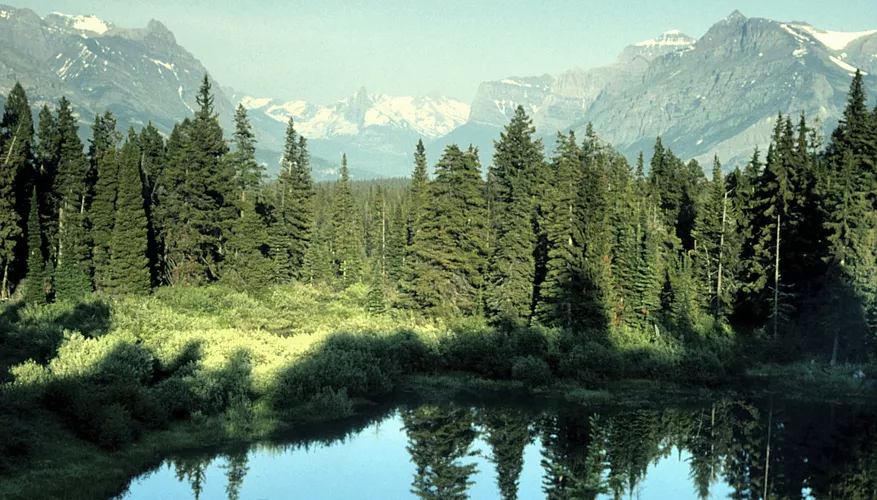

INTERESTING FACTS ABOUT FORESTS
- Biodiversity: Forests are home to over 50% of all plants, animals, bacteria, and fungi.
- Size: Forests cover about 30% of the world's land.
- Carbon: Forests act as carbon sinks, trapping and storing CO2.
- Medicine: Rainforest plants are used in some of the world's most important medicines.
- Food chain: Forests have a food chain system with plant life at the bottom and large mammals at the top.
- Weather: Forests moderate local temperatures, maintain rainfall and weather patterns, reduce erosion, and stem drought and flood cycles.
-
Types of forests: There are different types of forests, including:
Forest ecosystems exist around the world and in many different climates. Forests are generally defined as habitats dominated by trees, and while trees are the dominant organism in a forest, there is much more going on within a forest ecosystem than at first meets the eye. Every forest has its quirks and oddities, some astounding and some just silly, but like everything in nature, it all exists for a reason. Figuring out that reason is one of the most interesting parts of being an ecologist.